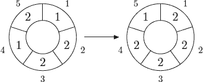

Home Page
F.A.Qs
Statistical Charts
Past Contests
Scheduled Contests
Award Contest
| Online Judge | Problem Set | Authors | Online Contests | User | ||||||
|---|---|---|---|---|---|---|---|---|---|---|
| Web Board Home Page F.A.Qs Statistical Charts | Current Contest Past Contests Scheduled Contests Award Contest | |||||||||
|
Language: Cellular Automaton
Description A cellular automaton is a collection of cells on a grid of specified shape that evolves through a number of discrete time steps according to a set of rules that describe the new state of a cell based on the states of neighboring cells. The order of the cellular automaton is the number of cells it contains. Cells of the automaton of order n are numbered from 1 to n. The order of the cell is the number of different values it may contain. Usually, values of a cell of order m are considered to be integer numbers from 0 to m − 1. One of the most fundamental properties of a cellular automaton is the type of grid on which it is computed. In this problem we examine the special kind of cellular automaton — circular cellular automaton of order n with cells of order m. We will denote such kind of cellular automaton as n,m-automaton. A distance between cells i and j in n,m-automaton is defined as min(|i − j|, n − |i − j|). A d-environment of a cell is the set of cells at a distance not greater than d. On each d-step values of all cells are simultaneously replaced by new values. The new value of cell i after d-step is computed as a sum of values of cells belonging to the d-enviroment of the cell i modulo m. The following picture shows 1-step of the 5,3-automaton.  The problem is to calculate the state of the n,m-automaton after k d-steps. Input The first line of the input file contains four integer numbers n, m, d, and k (1 ≤ n ≤ 500, 1 ≤ m ≤ 1 000 000, 0 ≤ d < n⁄2 , 1 ≤ k ≤ 10 000 000). The second line contains n integer numbers from 0 to m − 1 — initial values of the automaton’s cells. Output Output the values of the n,m-automaton’s cells after k d-steps. Sample Input sample input #1 5 3 1 1 1 2 2 1 2 sample input #2 5 3 1 10 1 2 2 1 2 Sample Output sample output #1 2 2 2 2 1 sample output #2 2 0 0 2 2 Source | |||||||||
[Submit] [Go Back] [Status] [Discuss]
All Rights Reserved 2003-2013 Ying Fuchen,Xu Pengcheng,Xie Di
Any problem, Please Contact Administrator